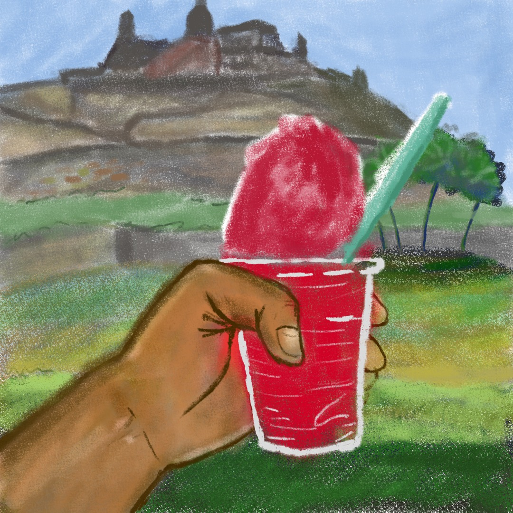
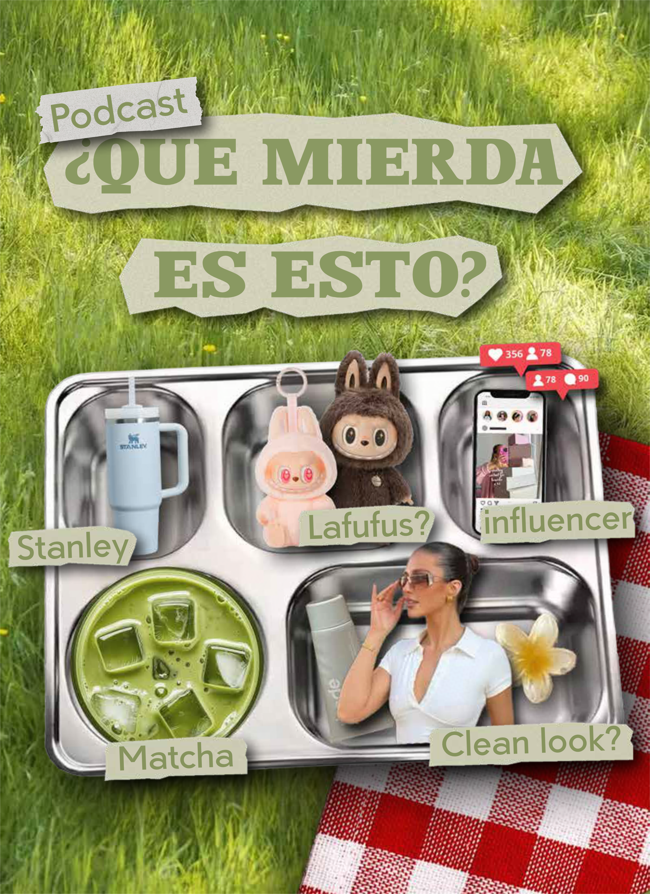
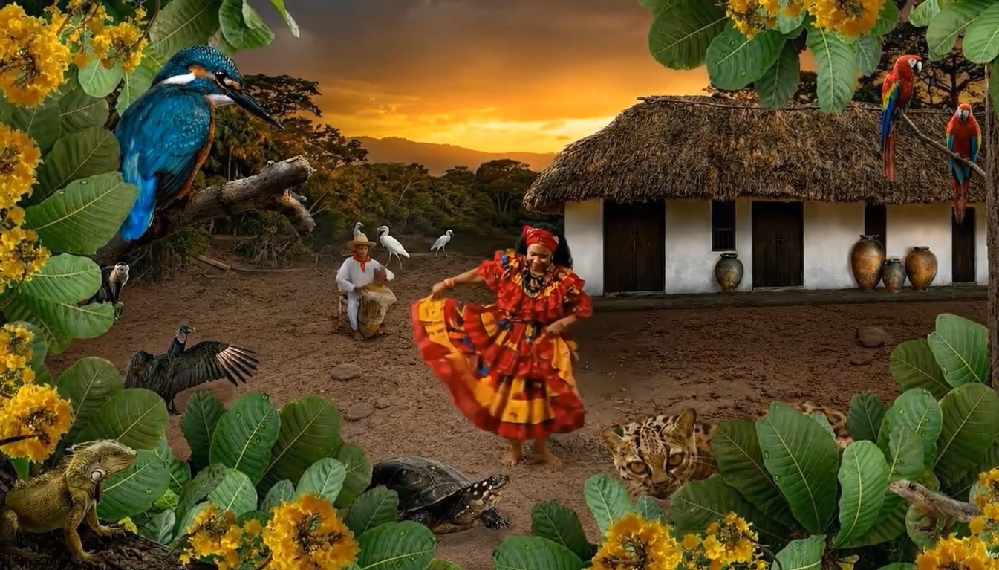
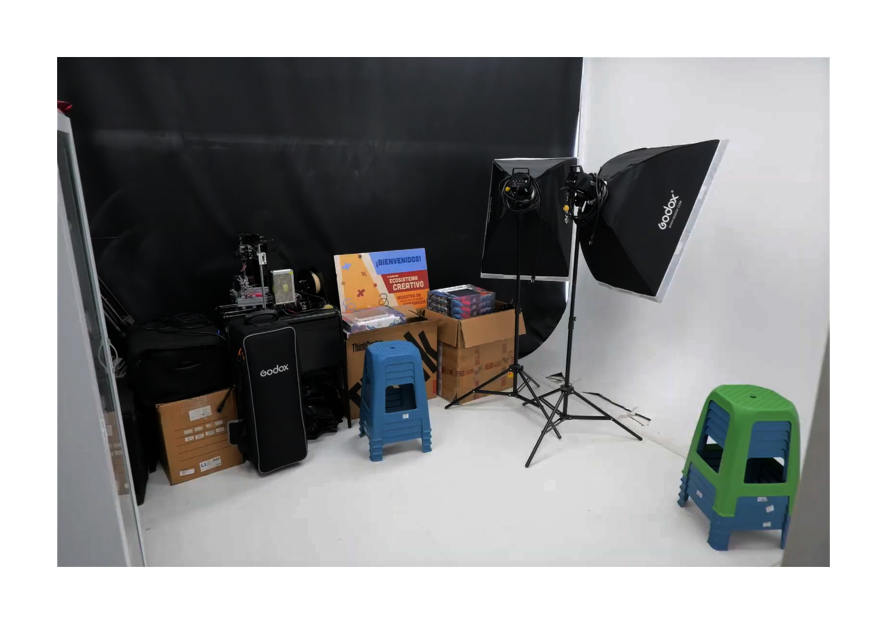

Proyectos Creativos
·
·
·
·

Stickers — vida de barrio
'Vida de Barrio' es una serie de stickers basados en la necesidad de llevar con uno ilustraciones basadas en las costumbres propias de los barrios cartageneros.
Cortometraje — Pedro
'PEDRO' es un cortometraje que busca retratar la fragilidad de la existencia humana frente al paso del tiempo y la fuerza del entorno. A través de la vida de un pescador de La Boquilla, se propone un viaje emocional donde la rutina, el mar y los manglares se convierten en metáforas del ciclo natural de pérdida y renacimiento. La intención es reflexionar sobre cómo los actos cotidianos pueden esconder historias de culpa, resiliencia y memoria; cómo el paisaje y el hombre se desvanecen juntos cuando la vida cambia de rumbo.
Animación — Raspao
'Raspao' es una animación breve el que muestra una escena cotidiana en cartagena, un raspao frente al castillo de sanfelipe.
podcast — Reggeton el nuevo rock
'Reggaetón el nuevo rock' es un podcast que explora la evolución del genero llevado de la mano del artista Bad Bunny y como se compara con el rock.
Podcast — que mierda es esto?
'¿Que mierda es esto?' es un podcast que explora las tendencias absurdas, el por qué de su popularidad, su importacia y el verdadero impacto que tienen en la sociedad, la cultura y la economia.
Animación — Totó la Momposina
Esta animación es un homenaje a la cantante Totó la Momposina, quien ha sido una figura importante en la música tradicional colombiana. la animación toma de inspiracion la canción "aguacero de mayo" y esta asistida en menor medidapor IA.
Flyer — Luis Kiss
Este flyer fue diseñado para promocionar el aniversario del gastro bar Luis Kiss.
Animación — stop motion
Esta animación es un breve proyecto que experimenta el uso de la técnica de stop motion para contar de manera diferente una historia.